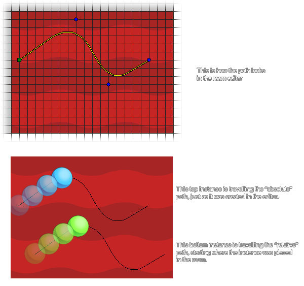

path_start(path, speed, endaction, absolute);
| Argumento | Descripción |
|---|---|
| path | El índice de ruta para comenzar. |
| speed | La velocidad de seguir la ruta en píxeles por paso, significando que el sentido negativo va hacia atrás. |
| endaction | Qué hacer cuando se llega al final de la ruta (consulte las constantes que se enumeran a continuación). |
| absolute | Si la instancia de llamada debe seguir la ruta absoluta tal como está en el editor (verdadero) o una ruta relativa a su posición actual (falsa). |
Devoluciones: N / A.
Una ruta se crea a partir de una serie de puntos de definición que se vinculan entre sí y luego se utilizan para planificar los movimientos de una instancia. Se pueden crear con código o en el Editor de rutas y se asignan a una instancia para usar en el juego. A continuación, utilizaría esta función para indicar a su instancia qué camino seguir, qué velocidad seguir en la ruta (medida en píxeles por paso), cómo comportarse cuando llega al final de la ruta y si debe seguir la ruta absoluta o relativa. posición. Esta última parte significa que comienza y sigue la ruta exactamente como lo diseñó y lo colocó en el Editor de ruta (absoluta), o comienza y sigue la ruta desde la posición en la que se creó la instancia (relativa).

Como puede ver en la imagen de arriba, las dos instancias siguen el mismo camino iniciado con path_start(), pero una de las instancias sigue la ruta absoluta mientras que la otra sigue la ruta relativa. Se debe tener en cuenta que cuando relative se establece en false (absoluto), la instancia "saltará" al inicio de la ruta sin importar en qué parte de la sala se encuentre.
Las constantes utilizadas para definir el comportamiento de la instancia cuando llega al final de la ruta son las siguientes:
| Constante | Descripción |
|---|---|
| path_action_stop | Termina el camino |
| path_action_restart | Continúa la ruta desde el principio, salta a la posición de inicio nuevamente si la ruta no está cerrada |
| path_action_continue | Continuar desde la posición actual |
| path_action_reverse | Retroceda a lo largo del camino nuevamente (logrado invirtiendo la velocidad de movimiento del camino) |
path_start(path, 4, path_action_reverse, 0);
Esto hará que la instancia de llamada siga la ruta indexada en la variable "ruta" a una velocidad de 4 píxeles por paso. Seguirá el camino relativo a su propia posición, y cuando llegue al final, invertirá la dirección y retrocederá por donde llegó.